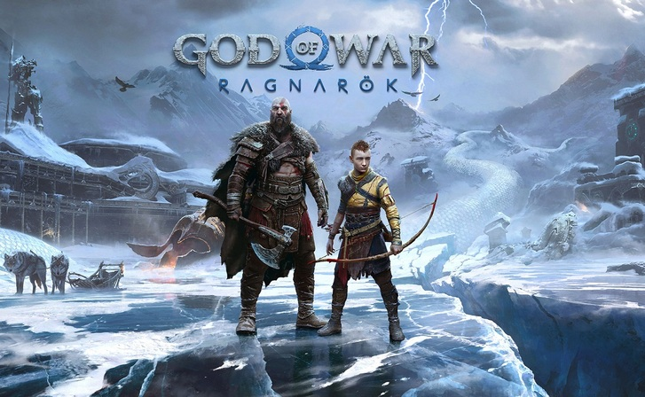

The Last of Us II #1
Dessa vez, não é apenas a história que é maior e mais densa, mas o mundo de
Joel e Ellie parece muito
maior (e mais perigoso também). O desenvolvimento da trama permanece de forma totalmente linear, mas
agora o mundo está mais “aberto” para que o jogador possa explorá-lo. Cada pedaço de documento ou item
perdido encontrado é uma história em paralelo que torna essa realidade tão envolvente e esse mundo um
livro esperando para ser lido.

God of War Ragnarok #2
God of War Ragnarok era um jogo que muitos esperavam para o lançamento do
PlayStation 5, porém teve 2021
como data prevista. Depois, o jogo foi adiado "para assegurar que a Santa Monica Studio possa entregar o
incrível game de God of War que todos queremos jogar", até que sua data de lançamento foi confirmada já
em 2022. Eis que todos poderão jogar o game a partir do dia 9 de novembro com uma certeza: valeu a pena
esperar.
Horizon zero Down #3
Horizon Zero Dawn é o novo game de aventura exclusivo para PS4. Com gráficos
incríveis, um mapa aberto
gigantesco e um enredo que prende a atenção, o título se destaca como uma das melhores opções para o
console da Sony.
Spider-Man: Miles Morales #4
Com uma campanha principal que pode ser finalizada em menos de dez
horas, Marvel's Spider-Man: Miles
Morales é completamente focado na história do personagem cujo nome inspira o título. Provavelmente,
mesmo quem não conhecia ou simpatizava com Miles, seja por nunca ter ouvido falar dele antes ou ser
apegado demais ao Peter, vai passar a apreciar a companhia do jovem herói após este game.

Days Gone #5
Days Gone é o novo game de ação e aventura que chega exclusivamente para PS4. Nele,
o jogador assume o
controle do motoqueiro Deacon St. John, que luta pela sobrevivência em um mundo devastado por um
apocalipse zumbi. Apesar do enredo até certo ponto clichê, será que a Sony conseguirá emplacar mais uma
franquia de sucesso?